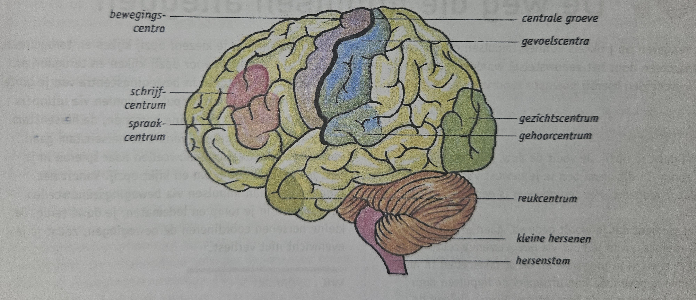
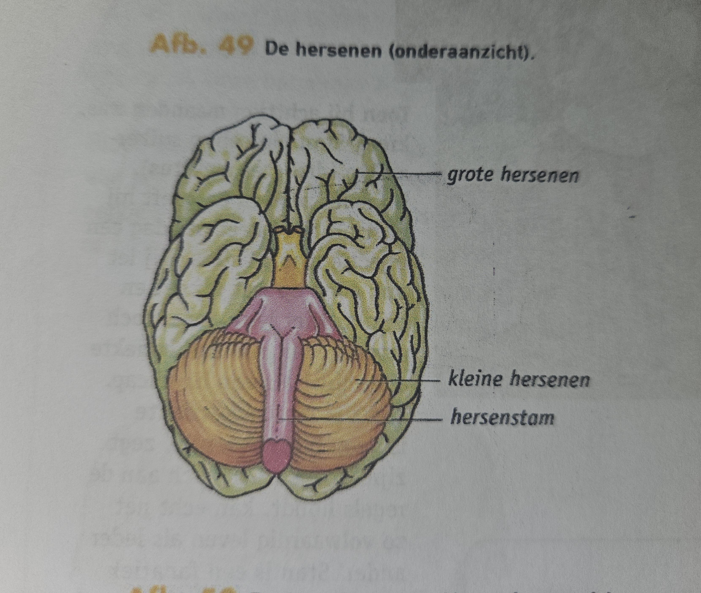

Basisstof 9


De bouw van de grote hersenen en v/d kleine hersenen
- schors: aan de buitenkant, grijs van kleur, bevat veel cellichamen en schakelcellen
- merg: aan de binnenkant, lichter van kleur, bevat veel uitlopers van schakelcellen
Functies van grote hersenen
- verwerken van impulsen afkomstig van zintuigen, vb als je een kaktus aanraakt zorgt de grote hersenen ervoor dat je voelt dat het je steekt
- regelen van gewilde bewegingen, vb als je iemand gaat schoppen
delen van de grote hersenen met speciale Functies
- Gevoelscentra-> bijv gehoorcentra en gezichtscentra worden binnenkomende impulsen verwerkt, zodat j kan zien en horen
- bewegingscentra-> bijv schrijfcentra en spraakcentra onstaant impulsen voor gewilde bewegingen, als je een spier wilt bewegen
Functies van kleine hersenen
- coordineren van bewegingen, vb als je loopt zorgt het ervoor dat je benen en armen goed samenwerken
Functies van de hersenstam
- ze geleiden impulsen van het ruggenmerg naar de grote en kleine hersenen en omgekeerd
- ze geleiden impulsen van zenuwen in j hoofd en hals naar de grote en kleine hersenen en omgekeerd
love u princess